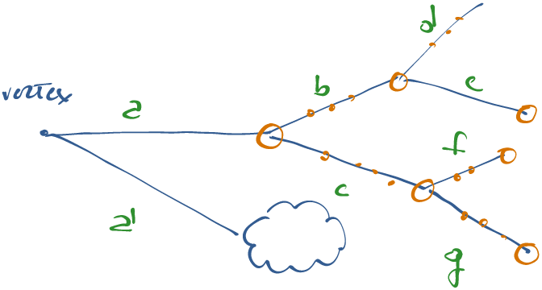

Introduction
Definitions
Let's first start defining few objects that will be used over and over again.
- SimTrack: a
SimTrackis a track that has been produced by Geant4, i.e. this track can be a product of the interaction with the detector. - GenParticle : a
GenParticleis a track that has been produced by Pythia, i.e. this track is usually the product of the initial p-p collision and cannot come from the downstream detector simulation.
[info] Info Not all SimTracks are GenParticles (the ones coming from decays and from the interaction with the detector), but usually all the GenParticles (within the detector acceptance) are SimTracks. The CaloParticles are connected with both worlds.
General Information
- A CaloParticles is created from a SimTrack (usually the one closer to the production vertex): all the physical parameters of the CaloParticle will be inherited from the SimTrack.
- The CaloParticles, though, stores also all the information coming from all the SimHits coming from all other SimTracks that are children of the original SimTrack, together with the SimHits that it itself has left into the calorimeter.
Software Implementation
The package that creates the CaloParticle is
CaloTruthAccumulator.
The code itself is pretty well documented. It internally exploits a graph,
since this describes pretty well the nature of particle decays.
The Graph
The graph represents the full decay chain. The parent-child relationship is the
natural one, following "time". Each edge has a property (edge_weight_t) that
holds a const pointer to the SimTrack that connects the 2 vertices of the
edge, the number of SimHits associated to that SimTrack and the cumulative
number of SimHits of itself and of all its children. Only SimHits within the
selected detectors are taken into account. The cumulative property is filled
during the depth first search (dfs) exploration of the graph: if not
explored the number is 0. Each vertex has a property (vertex_name_t) that holds
a const pointer to the SimTrack that originated that vertex and the cumulative
number of SimHits of all its outgoing edges. The cumulative property is filled
during the dfs exploration of the graph: if not explored the number is 0.
Stable particles are recovered/added in a second iterations and are linked to
ghost vertices with an offset starting from the highest generated vertex.
Multiple decays of a single particle that retains its original trackId are
merged into one unique vertex (the first encountered) in order to avoid multiple
counting of its associated SimHits (if any).
Further implementation details are explained directly in the code.
Products
The products put into the event are mainly 2 (3 if we consider the pre-mixing
development): a SimClusterCollection and a CaloParticleCollection. Both
collections are std::vector of the corresponding objects: SimCluster and
CaloParticle, respectively. The corresponding python product label is
MergedCaloTruth.
SimCluster
A
SimCluster
has internally the following private members:
uint64_t nsimhits_;
EncodedEventId event_;
uint32_t particleId_;
float simhit_energy_;
std::vector<uint32_t> hits_;
std::vector<float> fractions_;
math::XYZTLorentzVectorF theMomentum_;
/// references to G4 and reco::GenParticle tracks
std::vector<SimTrack> g4Tracks_;
reco::GenParticleRefVector genParticles_;
A SimCluster is constructed starting from a single SimTrack. Afterwords,
many other SimTracks (and GenParticles) can be potentially added to the
SimCluster using the appropriate add* methods. Hence, a SimCluster is a
collection of GenParticles and SimTracks.
[warning] Warning This statement will be explained better in later section, since the plural here, is the concept itself of collection, really does not hold!
[danger] Danger Its physical properties are derived for the
SimTrackused to create theSimClusterin the first place.
CaloParticle
A
CaloParticle
is basically equivalent to a SimCluster, except that it has an additional data
member:
uint64_t nsimhits_;
EncodedEventId event_;
uint32_t particleId_;
float simhit_energy_;
std::vector<uint32_t> hits_;
std::vector<float> fractions_;
math::XYZTLorentzVectorF theMomentum_;
/// references to G4 and reco::GenParticle tracks
std::vector<SimTrack> g4Tracks_;
reco::GenParticleRefVector genParticles_;
SimClusterRefVector simClusters_;
Hence a SimCluster and a CaloParticle are basically the same object, the
only difference being the fact that a CaloParticle has embedded an additional
data member: SimClusterRefVector simClusters_ that can keep track of which
SimClusters belong to the very same CaloParticle.
[info] Info In this regard a CaloParticle is like a collection of SimClusters which are a collection of SimTracks.
More insight
In reality it seems that the different
add*methods of bothSimClusterandCaloParticleare never used, except for the creation of the objects themselves. The really important part is the hits_and_fractions member data that seems to be the only one actively used and filled in the code.Actually, the
addG4Trackmethod of bothSimClusterandCaloParticleis only called in their constructors: this means that bothSimClustersandCaloParticleshave one and only oneSimTrackembedded. The multiplicity is embedded into these objects using the hits_and_fractions member data and, in the case ofCaloParticlesby embedding severalSimClusterswithin a singleCaloParticleobject.
How they are created
In order to understand how the SimClusters and CaloParticles are created, we
will make use of the following decay picture:

The steps are the following:
- We start from the primary vertex and, for each edge coming out of it, we
create a
CaloParticleiff the correspondingSimTracksatisfies some requirements (e.g. , energy, , nhits, etc...). In the above figure, this means that we create 2CaloParticles, one starting from theSimTrackand the other starting from theSimTrack. We then start to explore each vertex of the decay graph and, once we find a
SimTrackthat has left hits in the calorimeters, we add that as a newSimClusterassociated to the currentCaloParticle. The exploration, therefore, is done using a dfs algorithm. TheSimClusteris created starting from theSimTrack, so that, in the figure above, aSimClusteris created starting from .[danger] Danger It is important to note that the act of creating a
CaloParticleor aSimClusterfrom aSimTrackdoes not modify or set the hits_and_fractions data member.In fact, the information on the hits is added later on, looping on all the
SimHitsthat have been associated to theSimTracksunder investigation. The complete collection of hits and the corresponding energy and fractions are added to the currentSimClustervia the addRechitsAndFractions method for each singleSimHit.[danger] Danger At this stage, actually, the second member (i.e. the fraction) is still the real energy of the
RecHit, not its fraction.The final step will loop over the full list of
SimClusterscreated and will convert the energies stored so far as the second value of the hits_and_fractions member (i.e. the fraction) in the proper fractions, taking into account the full picture of the real signal event plus all the underlying pileup. This is done in thefinalizeEventmethod of theCaloTruthAccumulatorclass.